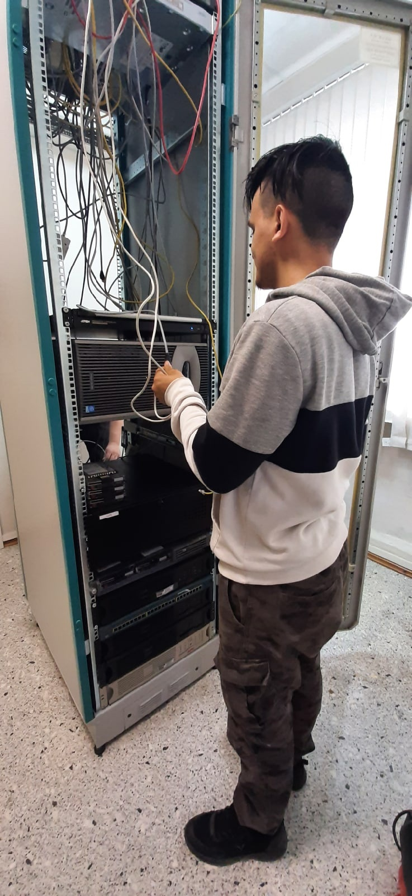

Создание HTML странички.
В рамках прохождения производственной практики на базе «Ростелеком» моим наставником была поставлена задача создать веб страницу на HTML. Первое что нам нужно сделать это открыть программу, в которой мы будем писать наш сайт в моём случае это Sublime. Создаем новую страничку выбираем во вкладках язык HTML программа подстроила новую страничку для написания сайта. Это первая страничка создаём ещё одну страничку с расширением CSS для того, чтобы у нашего сайта были стили. Начинаем писать сайт. Добавляем меню навигации для будущий страничек ищем для него CSS стиль в интернете кидаем в наш код меняем классы на более удобные для нас. Добавляем новые классы в CSS для того, чтобы наш будущий сайт смотрелся лучше и приятней. Я пользуюсь контейнерами DIV для блоков поэтому пропишу для них стиль. Прописываем фон, ограничение символов, тень, скругление уголков, обзываем наш стиль как нам удобно и перейдём к следующему стилю. Следующий стиль буде для текста прописываем шрифт, размер, жирность и отступы, так же обзываем наш стиль как удобно. Наконец можно приступить к вёрстке нашей странице. Создаем контейнер DIV в него помещаем текст, на всё это накидываем стили добавляем картинки с помощью команды IMG создаём под картинки стиль и применяем его к ним, и вот у нас уже есть HTML страничка.

Разработка HTML странички
Кабель-Менеджмент
Выбрать хороший и надежный кабель — дело, конечно, непростое, но не менее важно уметь правильно организовать все эти провода: чтобы было не только функционально и удобно, но ещё и красиво. Причем некоторые умельцы настолько заморочились, что даже придумали для этого специальный термин — (cable porn) «кабель-менеджмент». На правах пятницы предлагаем посмотреть, как выглядит не просто хороший кабель-менеджмент, а настоящий кабельный перфекционизм. Самый очевидный инструмент для организации кабелей — старые добрые хомутики-стяжки, проверенные временем. Но есть у них и недостатки: во-первых, они одноразовые, а во-вторых, такое решение подходит больше для дома, нежели для больших коммерческих помещений. В ЦОДах давно перешли на многоразовые липучки — они чуть дороже, но не менее надежны, к тому же не надо списывать их после одного использования.

Я на практике